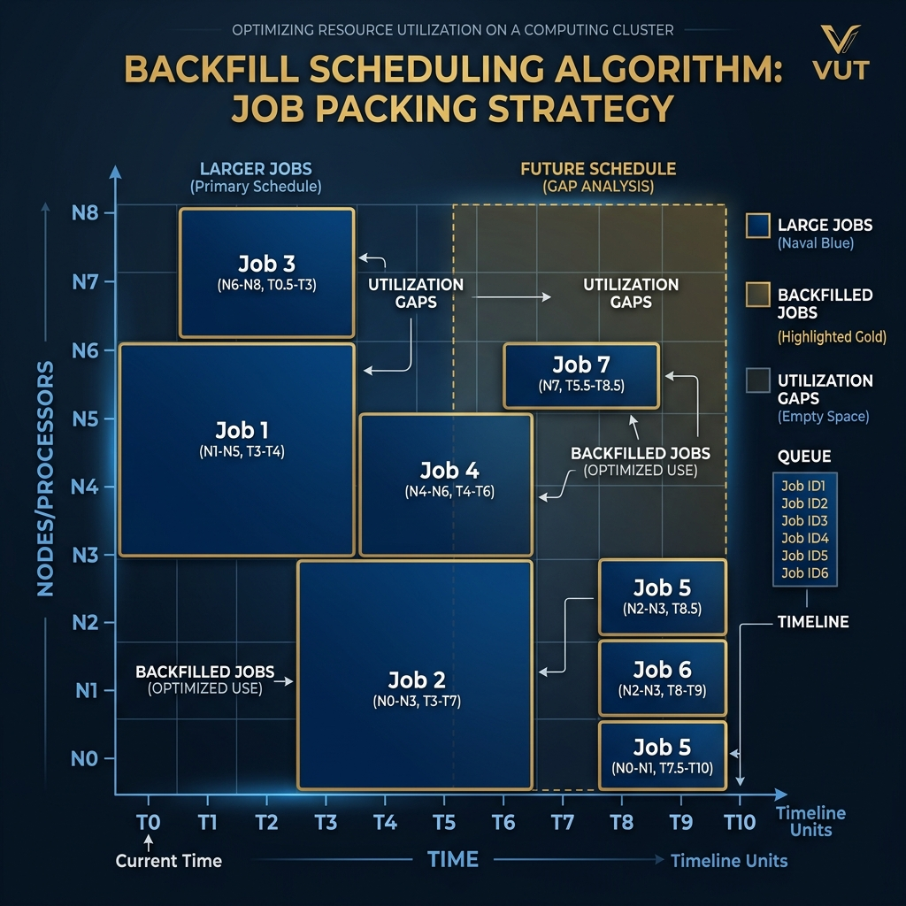

Resource Management with Slurm
HPC & Cluster ComputingCourse: Operating Systems 4 (HPC)
Module: EIOSY4A
Topic: Resource Management with Slurm
Reading Time: ~15 Minutes
Overview
In Week 3, we provisioned the cluster nodes using Warewulf, creating a pool of compute nodes ready to run scientific workloads. But a critical question now emerges: how do we fairly and efficiently share this powerful hardware among multiple users and competing jobs? Without a management system, every user would simply SSH into a node and run their code, causing resource conflicts, system crashes, and an overall chaotic environment.
This week introduces Slurm (Simple Linux Utility for Resource Management), the dominant workload manager in the HPC world. Slurm acts as the traffic controller of the cluster, accepting job requests, queuing them, and intelligently allocating compute resources to ensure fair access and maximum utilization.
Note: Slurm is used by the majority of the Top500 supercomputers. Understanding it is an essential skill for anyone entering the HPC field.
By the end of this week, you should be able to:
1. Justify the necessity of advanced workload managers in multi-tenant, shared HPC environments.
2. Analyze the architectural components and daemon interactions within Slurm.
3. Manage job lifecycles by submitting, monitoring, and debugging complex batch scripts.
4. Formulate optimized
sbatch scripts with precise resource allocation directives.5. Evaluate how Slurm partitions, Quality of Service (QOS), and priority algorithms influence job scheduling fairness.
Welcome to Week 4! Your cluster is now alive and provisioned. This week, we transform it from a pool of raw hardware into a managed scientific computing service. We install and configure Slurm — the invisible hand that orchestrates millions of compute hours daily at institutions worldwide. By the end of this week, you will submit your first real HPC job.
Assessment Alignment: The weekly quiz and practical assignments for this module specifically evaluate the Learning Outcomes listed below, verifying your ability to operate at an NQF Level 7 standard of analysis and synthesis.
1. The Resource Management Problem
Imagine a cluster with 100 compute nodes (4,000 CPU cores). On a Monday morning, 50 researchers simultaneously SSH in and launch their simulations. Without coordination:
- Two researchers might use the same node, starving each other of CPU and RAM.
- A memory-intensive job could crash a node, killing everyone else's work.
- A single greedy user could monopolize the entire cluster for days.
- There is no fair way to prioritize critical deadline-driven jobs over routine analyses.
A Workload Manager (WLM) — also called a Job Scheduler — solves all of these problems. It provides a centralized service where users submit their computational requirements (cores, memory, time), and the scheduler decides when and where to run each job based on defined policies.
1.1 The Scheduling Challenge
Effective scheduling is a notoriously difficult optimization problem. The scheduler must balance competing objectives:
| Objective | Description |
|---|---|
| High Utilization | Keep as many nodes busy as possible to maximize return on investment. |
| Low Wait Time | Minimize the time users spend waiting in the queue. |
| Fairness | Prevent monopolization; give all users equitable access over time. |
| Priority | Allow high-priority or deadline-sensitive jobs to run before low-priority ones. |
Slurm addresses these competing objectives through a sophisticated priority calculation system and configurable policies.
2. Slurm Architecture
Slurm follows a classic master-agent architecture. The Controller node runs the central brain, while lightweight agents run on every compute node.
2.1 Core Daemons
| Daemon | Runs On | Role |
|---|---|---|
slurmctld |
Controller (SMS) Node | The central scheduler. Manages the job queue, node state, and makes all allocation decisions. It is the authoritative source of truth for the cluster's state. |
slurmd |
Every Compute Node | The local job launcher. Receives instructions from slurmctld, launches job steps on behalf of users, and reports node health back to the controller. |
slurmdbd |
Controller or dedicated host | The database daemon. Records all job accounting data (start/end times, resources used, costs) to a MySQL/MariaDB database for billing and reporting. |
munged |
All Nodes | Authentication daemon. Provides shared-secret authentication between Slurm daemons to prevent unauthorized job submission or control. |
2.2 The Munge Security Layer
Slurm uses Munge for intra-cluster authentication. A single cryptographic key (/etc/munge/munge.key) must be identical on all nodes. When a user submits a job, slurmctld uses Munge to verify the request is genuine. If the key is absent or mismatched on a compute node, slurmd will refuse to accept jobs from the controller — a common source of errors in new installations.
# Distribute the Munge key to all nodes via Warewulf overlay
# On the SMS (after Slurm is installed):
sudo wwctl overlay import --parents nodeconfig /etc/munge/munge.key
sudo wwctl overlay chown nodeconfig /etc/munge/munge.key \
"$(id -u munge)" "$(id -g munge)"
sudo wwctl overlay chown nodeconfig /etc/munge "$(id -u munge)" "$(id -g munge)"
sudo wwctl overlay chmod nodeconfig /etc/munge 0700
sudo wwctl overlay build
Explanation: The commands above import the generated Munge key into the Warewulf nodeconfig overlay, ensure proper ownership (munge:munge) and permissions (0700), and rebuild the overlay so compute nodes receive the exact same key during provisioning.
3. The Slurm Configuration File (slurm.conf)
The entire cluster topology and scheduling policy is defined in a single configuration file: /etc/slurm/slurm.conf. This file must be identical on all nodes (again, typically distributed via a Warewulf overlay).
3.1 Key Configuration Sections
Global Settings:
ClusterName=hpc-vut
ControlMachine=sms.cluster.local
AuthType=auth/munge
SlurmUser=slurm
StateSaveLocation=/var/spool/slurmctld
SlurmdSpoolDir=/var/spool/slurmd
Explanation: This block sets the fundamental cluster identity (ClusterName), identifies the controller node (ControlMachine), specifies Munge for authentication, and defines where state and spool data are stored.
Resource Tracking:
# Track CPU, memory, and GPU resources
SelectType=select/cons_tres
SelectTypeParameters=CR_Core_Memory
Explanation: These settings configure Slurm to track consumable resources (TRES) like CPUs, memory, and GPUs, allowing it to schedule jobs based on available cores and RAM (CR_Core_Memory) rather than just whole nodes.
Node Definitions:
# Define compute nodes with their hardware specs
NodeName=compute-[01-10] CPUs=32 RealMemory=128000 State=UNKNOWN
Explanation: This line registers nodes compute-01 through compute-10, informing the controller that each node has 32 CPUs and ~128GB of RAM. The State=UNKNOWN tells Slurm to wait for the node to check in and report its actual state.
Partition Definitions:
# Create a default partition for all nodes
PartitionName=debug Nodes=compute-[01-10] Default=YES MaxTime=01:00:00 State=UP
PartitionName=standard Nodes=compute-[01-10] MaxTime=7-00:00:00 State=UP
Explanation: These lines define two queues (partitions). The debug partition is the default and limits jobs to 1 hour. The standard partition allows jobs to run for up to 7 days. Both partitions share the same set of compute nodes.
4. Partitions, Accounts, and QOS
Slurm uses a hierarchical model to control resource access.
4.1 Partitions
A Partition is a logical grouping of nodes with a defined set of limits. Think of it as a named queue. Multiple partitions can share the same physical nodes.
| Property | Example | Purpose |
|---|---|---|
| MaxTime | 7-00:00:00 (7 days) |
Maximum wall-clock time a job may run. |
| MaxNodes | 4 |
Maximum number of nodes a single job may use. |
| AllowGroups | phd_students |
Restricts which Linux groups can use this partition. |
| Priority | 100 |
Higher-priority partitions preempt lower ones. |
4.2 Accounts and QOS
Accounts track resource usage by research group or project for billing purposes. QOS (Quality of Service) is overlaid on top of accounts to enforce additional limits or grant special privileges:
| QOS Feature | Description |
|---|---|
| MaxWall | Override partition wall time limits for premium users. |
| MaxTRESPerUser | Limit the total CPU-hours a user can consume concurrently. |
| Priority Boost | Grant higher scheduling priority to certain projects. |
| Preemption | Allow high-QOS jobs to pause or cancel lower-QOS jobs. |
# Create an account for a research group
sacctmgr add account physics_dept Description="Physics Department"
# Add a user to that account
sacctmgr add user jdoe Account=physics_dept
# Create a high-priority QOS
sacctmgr add qos high_priority Priority=100 MaxWall=14-00:00:00
Explanation: Using the sacctmgr command, this block first creates an accounting group (physics_dept), adds user jdoe to it, and then creates a Quality of Service (QOS) profile named high_priority that grants a priority boost and a 14-day wall time limit.
5. Submitting and Managing Jobs
Users interact with Slurm using a set of command-line tools. There are two modes for running jobs.
5.1 Interactive Jobs (srun)
srun launches a job step in real-time. Your terminal is blocked until the job finishes. This is useful for testing and debugging.
# Request 1 node, 4 CPUs, for 10 minutes, and run bash interactively
srun --nodes=1 --ntasks=4 --time=00:10:00 --pty bash -i
# Run a single MPI executable across 2 nodes (8 tasks total)
srun --nodes=2 --ntasks-per-node=4 ./my_mpi_program
Explanation: The first srun command allocates resources and opens an interactive terminal (--pty bash -i) on a compute node. The second submits a parallel MPI job requesting 2 nodes with 4 tasks each, executing my_mpi_program without an interactive shell.
5.2 Batch Jobs (sbatch)
sbatch submits a script to the queue and returns immediately, giving your terminal back. The job runs in the background when resources become available. This is the standard method for production workloads.
Example sbatch Script (my_job.sh):
#!/bin/bash
#SBATCH --job-name=matrix_multiply # Human-readable name
#SBATCH --output=logs/job_%j.out # Stdout log (%j = JobID)
#SBATCH --error=logs/job_%j.err # Stderr log
#SBATCH --nodes=2 # Number of compute nodes
#SBATCH --ntasks-per-node=16 # MPI ranks per node
#SBATCH --cpus-per-task=1 # Threads per rank (for hybrid MPI+OMP)
#SBATCH --mem=64G # Total RAM per node
#SBATCH --time=02:00:00 # Wall-clock time limit (HH:MM:SS)
#SBATCH --partition=standard # Target partition
# Load required software modules
module load openmpi5
module load python/3.11
# Run the parallel application
prun python3 simulation.py
Explanation: This is a standard Slurm batch script. The #SBATCH directives at the top specify resource requests (nodes, tasks, memory, time, partition) and logging configuration. The script then loads necessary software modules and launches the parallel application using prun (or srun/mpirun).
# Submit the script
sbatch my_job.sh
# Returns: Submitted batch job 12345
Explanation: The sbatch command is used to submit the batch script to the Slurm queue. It returns a unique Job ID (e.g., 12345) which is used to monitor or manage the job.
Key Variable:
$SLURM_NTASKSis automatically set by Slurm to equal the total number of MPI ranks requested (--nodes×--ntasks-per-node). Always use this variable in your scripts rather than hardcoding a number.
6. Monitoring and Managing Jobs
Once a job is submitted, administrators and users use these commands to track and control it.
| Command | Purpose | Example |
|---|---|---|
squeue |
View the job queue. Shows job state (PD=pending, R=running, CG=completing). | squeue -u jdoe |
sinfo |
View partition and node status. Shows idle, allocated, mixed, and down nodes. | sinfo -N -l |
scancel |
Cancel a pending or running job. | scancel 12345 |
scontrol |
Administrative control of Slurm objects. Drain/resume nodes, hold/release jobs. | scontrol show job 12345 |
sacct |
View detailed accounting records for completed jobs (CPU used, memory used, exit code). | sacct -j 12345 --format=JobID,Elapsed,MaxRSS |
sprio |
Display the calculated priority of pending jobs and its components. | sprio -j 12345 |
6.1 Node States
Administrators must understand node states to diagnose cluster health:
| State | Meaning | Action |
|---|---|---|
| idle | Node is available and fully free. | None needed. |
| allocated | All resources are in use by a job. | Normal state during a run. |
| mixed | Some CPUs are in use; remaining are available. | Normal state for partial allocation. |
| drain | Running jobs will finish, but no new jobs will start. Usually set by admin for maintenance. | scontrol update NodeName=node01 State=drain Reason="maintenance" |
| down | Node has failed health checks or was manually taken down. | Investigate and scontrol update NodeName=node01 State=resume |
7. Job Priority and Backfill Scheduling
Slurm does not simply run jobs in first-in, first-out order. It uses a multifactor priority system to determine which pending job runs next.
7.1 Priority Factors
The job priority score is a weighted sum of several factors:
$$ P_{job} = w_{age} \cdot F_{age} + w_{fair} \cdot F_{fairshare} + w_{size} \cdot F_{size} + w_{qos} \cdot F_{qos} $$
| Factor | Description |
|---|---|
| Age | Jobs that have been waiting longer get higher priority. Prevents starvation. |
| Fairshare | Users who have recently consumed many resources get lower priority. Enforces fairness across accounts. |
| Size | Can be configured to favor large jobs (high utilization) or small jobs (fast throughput). |
| QOS | A direct priority boost assigned by the administrator to specific QOS levels. |
7.2 Backfill Scheduling
Slurm uses Backfill Scheduling to improve utilization. Without backfill, if Job A needs 100 nodes but only 90 are free, nothing runs. With backfill, Slurm checks if a smaller Job B (needing only 10 nodes) can start and finish before the remaining 10 nodes would be freed for Job A. If so, it runs Job B now, using resources that would otherwise be idle.

Implication for Users: Adding accurate time estimates to your job scripts (
--time) helps the backfill algorithm and can significantly reduce your wait time.
8. Troubleshooting Common Issues
8.1 Job Stuck in PENDING (PD)
Use scontrol show job <jobid> and check the Reason field:
| Reason Code | Meaning | Fix |
|---|---|---|
| Resources | Waiting for enough free nodes. Normal state. | Wait. Check sinfo for node status. |
| Priority | Another job has higher priority. | Wait. Use sprio to compare priorities. |
| QOSMaxCpuPerUserLimit | User has exceeded their concurrent CPU limit defined in QOS. | Cancel other jobs or contact admin to adjust QOS. |
| InvalidAccount | Job submitted to an account the user is not a member of. | sacctmgr show assoc user=jdoe to check membership. |
8.2 Node Showing as DOWN
# Check why a node is down
scontrol show node compute-01
# Common causes and fixes:
# 1. slurmd not running on the node
ssh compute-01 "sudo systemctl status slurmd"
ssh compute-01 "sudo systemctl start slurmd"
# 2. Time is out of sync (Munge fails if clocks differ by > 5 minutes)
ssh compute-01 "timedatectl show"
# Fix: Ensure chrony/NTP is running on all nodes
# 3. After fixing, manually resume the node
scontrol update NodeName=compute-01 State=resume
Explanation: This series of commands is for troubleshooting a DOWN node. It starts by inspecting the node's state with scontrol. Then, it shows how to verify the slurmd service, check the system clock (crucial for Munge authentication), and finally bring the node back online using State=resume once the issue is resolved.
9. Summary and Next Steps
This week, we transformed our provisioned cluster into a managed computing service. We deployed Slurm, the industry-standard workload manager, understanding its daemon architecture (slurmctld, slurmd, munged), its configuration model (slurm.conf, partitions, QOS), and the essential user commands for submitting and monitoring jobs. We also explored how the multifactor priority system and backfill scheduling maximize utilization while maintaining fairness.
Preparing for Week 5
Next week, we ask the critical question: How do we know our cluster is actually fast? We will move from building infrastructure to measuring and optimizing its performance. We will use industry-standard benchmarks like HPL (the Top500 metric) and STREAM (memory bandwidth) to quantify our system's capabilities and learn the fundamentals of HPC performance tuning.
☐ Can you explain the difference between
srun (interactive) and sbatch (batch) job submission?☐ Do you understand why Munge key synchronization is critical for Slurm authentication?
☐ What does a job in the PENDING state with reason
Resources mean?☐ Can you write a basic
sbatch script that requests 2 nodes and 8 cores per node?Resources
- Sterling, T., Anderson, M. and Brodowicz, M. (2018). High Performance Computing: Modern Systems and Practices. Morgan Kaufmann. Chapter 6.
- SchedMD LLC. (2024). Slurm Workload Manager Documentation. Available at: https://slurm.schedmd.com/documentation.html (Accessed: 22 December 2025).
- OpenHPC. (2024). OpenHPC v3 Install Guide (Rocky Linux 9). Available at: https://openhpc.community/downloads/ (Accessed: 22 December 2025).
Test Your Knowledge
Ready to check your understanding of this week's material? Take the interactive quiz now!
Start Quiz